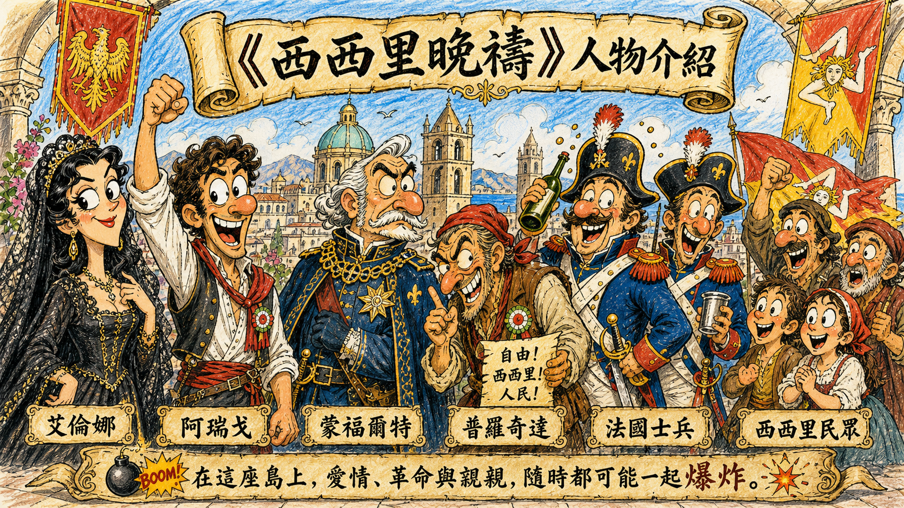
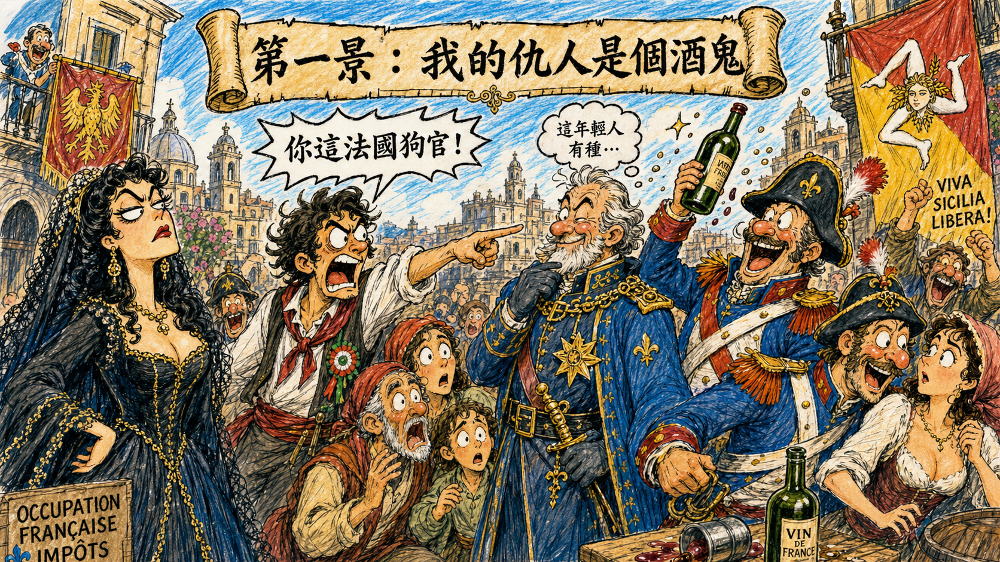
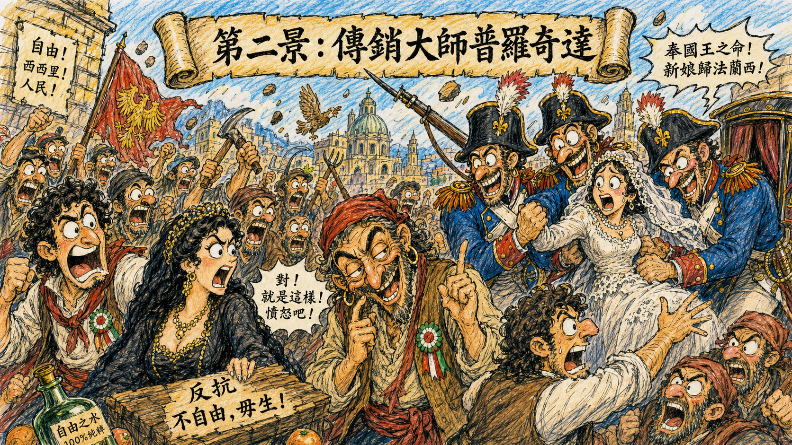
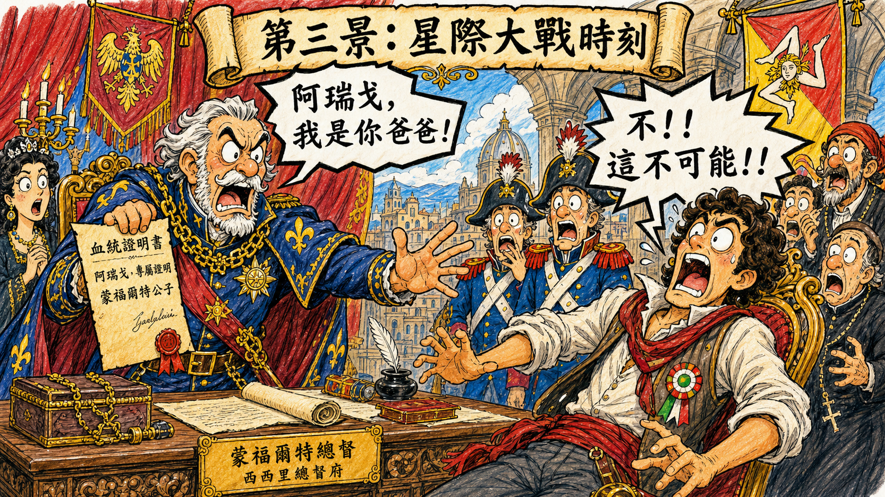
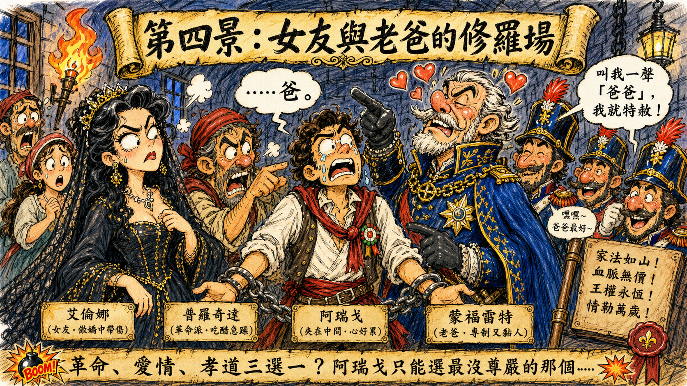
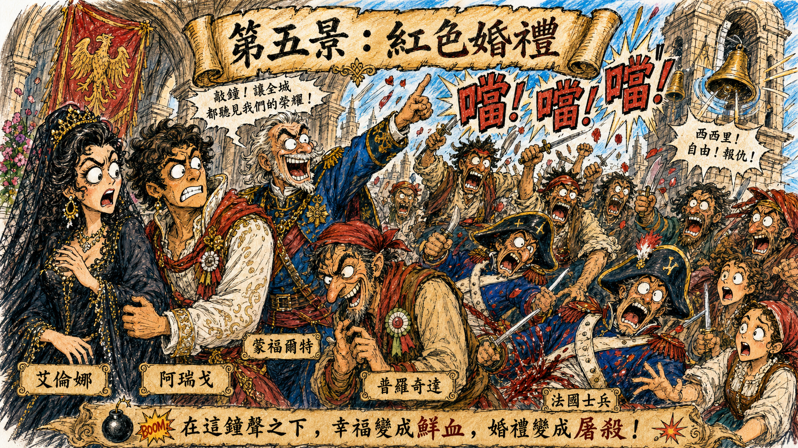

艾倫娜 Elena
落魄公爵夫人，哥哥被法國人處死。她的人生主軸很單純：復仇、復仇，還是復仇。愛情只是讓劇情更難收拾的副作用。
《西西里晚禱》：聽起來像教堂祈禱，實際上是鐘聲一響，全場從婚禮變成大型歷史械鬥現場。
各位看官，歡迎回到我們的「歌劇世間情」講古時間。
如果不說這是威爾第的作品，光看劇情，你可能會以為這是台灣八點檔或是《星際大戰》的古裝版。今天要說的這部戲叫做 《西西里晚禱》。聽名字非常神聖，感覺像一群虔誠信徒在夕陽下祈禱。錯！大錯特錯！這其實是一場發生在教堂鐘聲響起時的「大型械鬥屠殺案」。
這部戲是威爾第為了進軍巴黎，特地寫的「大歌劇」。什麼是大歌劇？簡單說就是：時間長到考驗膀胱，場面大到燒光預算，而且不管劇情合不合理，中間一定要硬塞一段芭蕾舞。

落魄公爵夫人，哥哥被法國人處死。她的人生主軸很單純：復仇、復仇，還是復仇。愛情只是讓劇情更難收拾的副作用。
熱血西西里青年，愛祖國、愛艾倫娜、恨法國總督。可惜命運送他一份親子鑑定級的大禮：仇人竟然是親爸。
法國總督，政治上是壓迫者，家庭上是遲到二十年的爸爸。比起統治西西里，他更想聽兒子叫一聲「爸」。
西西里愛國者兼煽動大師。別人談革命靠理念，他談革命靠點火、添柴、順便把油桶推過去。
占領軍標準範本：喝酒、鬧事、調戲、欺負人。簡單說，就是專門把民怨值刷到滿格的 NPC。
長期被壓迫的島民。前面忍很久，後面鐘聲一響，直接進入歷史事件模式。
鏡頭轉到 1282 年的西西里島。此時西西里被法國軍隊佔領，法國士兵基本上在街上橫著走：調戲婦女、欺負路人、喝酒鬧事，行為舉止非常符合「殖民政府如何快速失去民心」教科書。
女主角艾倫娜登場。她是落魄公爵夫人，哥哥被法國人砍了頭，所以她的人生目標只有一個：復仇。這種角色通常不是來談心的，是來點燃全劇火藥桶的。
男主角阿瑞戈也登場。他是熱血西西里憤青，深愛艾倫娜，也深愛祖國，而且超級痛恨法國總督蒙福爾特。
這時總督蒙福爾特出現。阿瑞戈直接衝上去嗆聲：「你這法國狗官！」正常總督可能會把他拖出去處理，結果蒙福爾特不但沒生氣，還露出一種詭異的欣賞表情。

這部戲的關鍵人物普羅奇達登場。他唱出著名詠嘆調〈O tu Palermo〉，表達對故鄉巴勒莫的深情。聽起來很感人，像遊子返鄉；但請注意，這個人表達愛鄉情懷的方式不是擁抱土地，而是準備製造暴動。
他的計畫非常粗暴：讓法國士兵去搶正在結婚的新娘，好激怒西西里男人。結果法國士兵真的去搶，西西里男人瞬間氣炸。
普羅奇達在旁邊看著民怨沸騰，內心大概正在鼓掌：「對！就是這樣！憤怒吧！再多一點！」

第三景是全劇最狗血的認親大會。蒙福爾特在辦公室讀一封信，那是他年輕時留下的風流帳。信裡明白告訴他：阿瑞戈不是普通西西里憤青，而是他的親生兒子。
蒙福爾特震驚。這時阿瑞戈被帶進來。蒙福爾特深情地看著他，說出全劇最八點檔的一句話：「阿瑞戈，我是你爸爸。」
阿瑞戈的反應幾乎就是路克天行者：「不！這不可能！不！」昨天他還是抗法英雄，今天突然變成官二代，而且爸爸還是女朋友最恨的人。
從這一刻起，阿瑞戈的人生就變成家庭倫理、革命義務與戀愛承諾三方互撞的大塞車。

阿瑞戈為了救父親免於被暗殺，不得不背叛革命夥伴。於是艾倫娜和普羅奇達都被抓進監獄，準備處死。
阿瑞戈衝進監獄解釋：「聽我解釋！我不是叛徒，我只是……有點家庭問題。」這種台詞通常在現實中也很難成功，在歌劇裡當然更是難上加難。
艾倫娜一開始很生氣：「你這法國走狗！」阿瑞戈只好坦白：「那個狗官……其實是我爸。」
艾倫娜瞬間心軟。畢竟這已經不是普通叛變，而是命運把人際關係打成死結。
蒙福爾特最後開出條件：「阿瑞戈，只要你肯叫我一聲爸爸，我就放了你的朋友，還讓你跟艾倫娜結婚。」
阿瑞戈掙扎許久，最後為了愛情與朋友，含淚喊了一聲：「爸！」蒙福爾特開心得像拿到糖果的小孩，馬上宣布特赦，還要辦婚禮。

結局來了。婚禮準備舉行，表面上大家都以為終於要大團圓。蒙福爾特開心，阿瑞戈緊張，艾倫娜心情複雜，普羅奇達則完全沒有要放過這個場面的意思。
他偷偷告訴艾倫娜：婚禮鐘聲就是起義信號。鐘聲一響，西西里人就會衝出來屠殺法國人。
艾倫娜嚇壞了。她不想讓婚禮變成血案，所以拒絕說「我願意」，試圖取消婚禮阻止鐘聲。但不知情的蒙福爾特爸爸以為小倆口只是害羞，還非常熱心地幫忙推進流程。
他一聲令下：「敲鐘！婚禮開始！」
埋伏好的西西里人拿出刀衝出來。新郎傻眼，總督爸爸傻眼，法國士兵還沒反應過來就被砍翻。最後，法國人被屠殺殆盡，這就是歷史上著名的「西西里晚禱」事件。

說書人點評：這齣戲教我們三件事
總之，《西西里晚禱》表面是民族起義，骨子裡是：爸爸太晚認兒子、革命家太會點火、婚禮主持人太愛敲鐘。